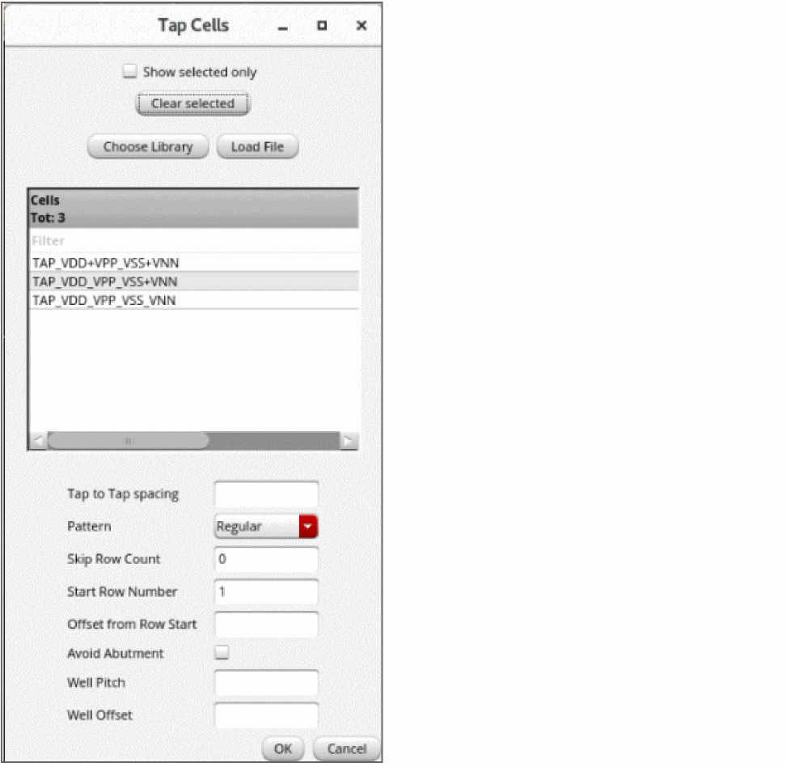
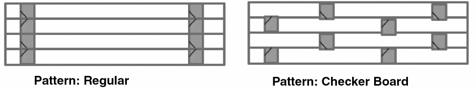
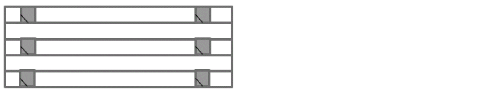
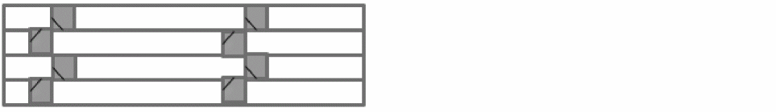

Adding Tap Cells During Automated Standard Cell Placement
In the Virtuoso standard cell automatic placement and routing flow, adding tap cells helps reduce latch-up effects between power and ground connections and the connections with wells or substrate contacts. Tap cells are inserted as part of the placement step.
- Open the Place tab of the Auto P&R assistant in Standard Cell mode.
-
Select Add tap cells and click the ellipsis button.
The Tap Cells form appears.
 -
From the Cells list, select the required cells to be used as tap cells. These are the cells with their component class set to
STDSUBCONT. - In Tap to Tap spacing, specify the spacing to be maintained between adjacent tap cells.
-
From the Pattern list, select the pattern in which tap cells are to be inserted: Regular or Checker Board.
The Skip Row Count and Avoid Abutment settings are not available when the Checker Board pattern is selected. -
Set Skip Row Count to the number rows to be skipped while inserting tap cells. The top row cannot be skipped. In the following example, alternate rows are skipped.
 - In Start Row Number, specify the row number from which tap cell insertion must start.
- Specify the Offset from Row Start, which is the initial offset for the first tap cell in each row.
-
Select Avoid Abutment to specify that the tap cells must not be abutted vertically. By default, tap cells are abutted.
 - In Well Pitch, specify the pitch or the minimum spacing between standard cells and the tap cell wall.
- In Well Offset, specify the offset of the tap cell wall from their adjoining standard cells.
- Click OK to close the form and go back to the Place tab of the Auto P&R assistant.
Tap cells are added when you run the automated standard cell placer.
Related Topics
Auto P&R Assistant User Interface for Standard Cell
Standard Cell Components Generated During Placement
Placing Standard Cells Automatically
Adding Boundary Cells During Automated Standard Cell Placement
Adding Filler Cells During Automated Standard Cell Placement
Return to top